Code
remotes::install_github("lter/lterdatasampler")Introduction to Statistics in R
remotes::install_github("lter/lterdatasampler")options(repos = c(CRAN = "https://cran.rstudio.com"))
library(tidyverse)
library(ggpubr)
install.packages("lterdatasampler")
The downloaded binary packages are in
/var/folders/9z/jhvcp6pd2jdgn7z7pd30zw1w0000gn/T//Rtmp0P9AGw/downloaded_packageslibrary(lterdatasampler)
library(car)
library(visdat)?and_vertebrates# View the data structure
glimpse(and_vertebrates)Rows: 32,209
Columns: 16
$ year <dbl> 1987, 1987, 1987, 1987, 1987, 1987, 1987, 1987, 1987, 1987…
$ sitecode <chr> "MACKCC-L", "MACKCC-L", "MACKCC-L", "MACKCC-L", "MACKCC-L"…
$ section <chr> "CC", "CC", "CC", "CC", "CC", "CC", "CC", "CC", "CC", "CC"…
$ reach <chr> "L", "L", "L", "L", "L", "L", "L", "L", "L", "L", "L", "L"…
$ pass <dbl> 1, 1, 1, 1, 1, 1, 1, 1, 1, 1, 1, 1, 1, 1, 1, 1, 1, 1, 1, 1…
$ unitnum <dbl> 1, 1, 1, 1, 1, 1, 1, 1, 1, 1, 1, 1, 1, 1, 1, 1, 2, 2, 2, 2…
$ unittype <chr> "R", "R", "R", "R", "R", "R", "R", "R", "R", "R", "R", "R"…
$ vert_index <dbl> 1, 2, 3, 4, 5, 6, 7, 8, 9, 10, 11, 12, 13, 14, 15, 16, 1, …
$ pitnumber <dbl> NA, NA, NA, NA, NA, NA, NA, NA, NA, NA, NA, NA, NA, NA, NA…
$ species <chr> "Cutthroat trout", "Cutthroat trout", "Cutthroat trout", "…
$ length_1_mm <dbl> 58, 61, 89, 58, 93, 86, 107, 131, 103, 117, 100, 127, 99, …
$ length_2_mm <dbl> NA, NA, NA, NA, NA, NA, NA, NA, NA, NA, NA, NA, NA, NA, NA…
$ weight_g <dbl> 1.75, 1.95, 5.60, 2.15, 6.90, 5.90, 10.50, 20.60, 9.55, 13…
$ clip <chr> "NONE", "NONE", "NONE", "NONE", "NONE", "NONE", "NONE", "N…
$ sampledate <date> 1987-10-07, 1987-10-07, 1987-10-07, 1987-10-07, 1987-10-0…
$ notes <chr> NA, NA, NA, NA, NA, NA, NA, NA, NA, NA, NA, NA, NA, NA, NA…vis_dat(and_vertebrates)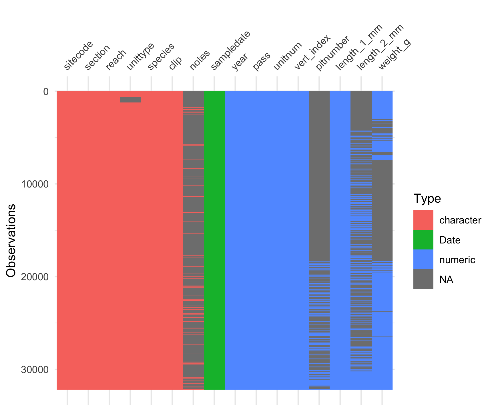
# Explore the metadata in the Help pane
?and_vertebratesand_vertebrates |>
filter(species == "Cutthroat trout") |>
count(unittype)# A tibble: 8 × 2
unittype n
<chr> <int>
1 C 11419
2 I 23
3 IP 105
4 P 5470
5 R 420
6 S 9
7 SC 2377
8 <NA> 610and_vertebrates |>
filter(species == "Cutthroat trout") |>
drop_na(unittype) |>
count(unittype)# A tibble: 7 × 2
unittype n
<chr> <int>
1 C 11419
2 I 23
3 IP 105
4 P 5470
5 R 420
6 S 9
7 SC 2377# First clean the dataset to create the contingency table from
trout_clean <- and_vertebrates |>
#filter Cutthroat trout
filter(species == "Cutthroat trout") |>
# lets test using just the 3 most abundant unittypes
filter(unittype %in% c("C", "P", "SC")) |>
# drop NAs for both unittype and section
drop_na(unittype, section)
cont_table <- table(trout_clean$section, trout_clean$unittype)chisq.test(cont_table)
Pearson's Chi-squared test
data: cont_table
X-squared = 188.68, df = 2, p-value < 2.2e-16trout_clean |>
count(unittype, section) |>
ggpubr::ggbarplot(x = 'unittype', y = 'n',
fill = 'section',
palette = c("#00AFBB", "#E7B800"),
add = "mean_se") 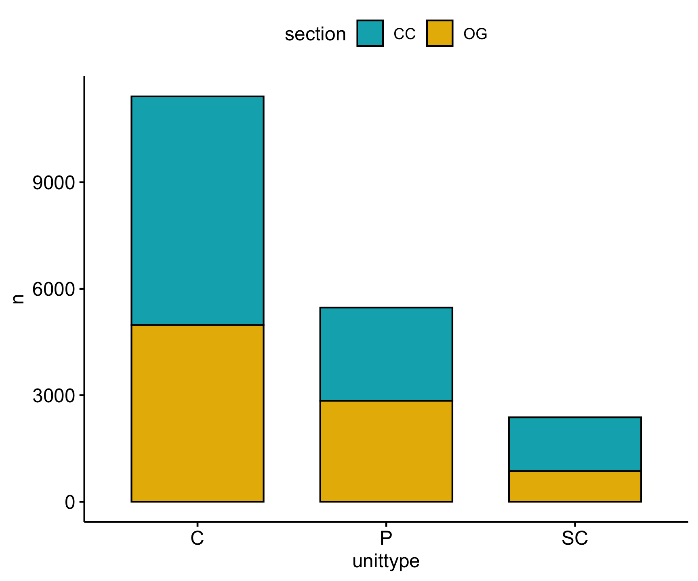
trout_clean |>
drop_na(weight_g) |>
ggpubr::ggviolin(x = "section",
y = "weight_g",
add = "boxplot",
color = "section",
palette = c("#00AFBB", "#E7B800")) 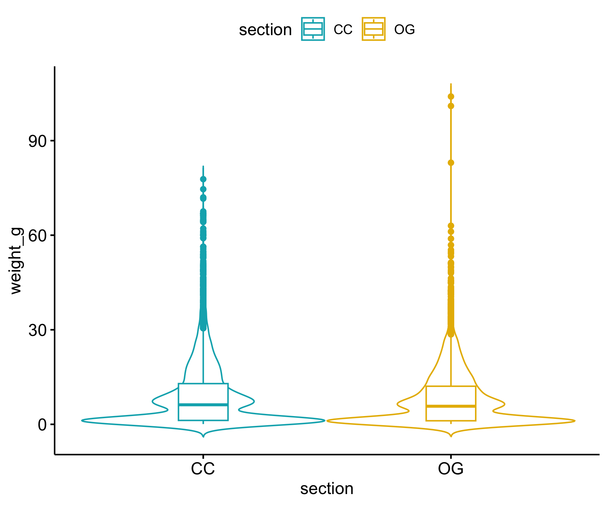
cc_weight <- trout_clean |>
filter(section == "CC") |>
pull(weight_g)
og_weight <- trout_clean |>
filter(section == "OG") |>
pull(weight_g)
var.test(cc_weight, og_weight)
F test to compare two variances
data: cc_weight and og_weight
F = 1.2889, num df = 6310, denom df = 5225, p-value < 2.2e-16
alternative hypothesis: true ratio of variances is not equal to 1
95 percent confidence interval:
1.223686 1.357398
sample estimates:
ratio of variances
1.288892 ggpubr::ggarrange(ggpubr::gghistogram(cc_weight, main = "Clear Cut"),
ggpubr::gghistogram(og_weight, main = "Old Growth"))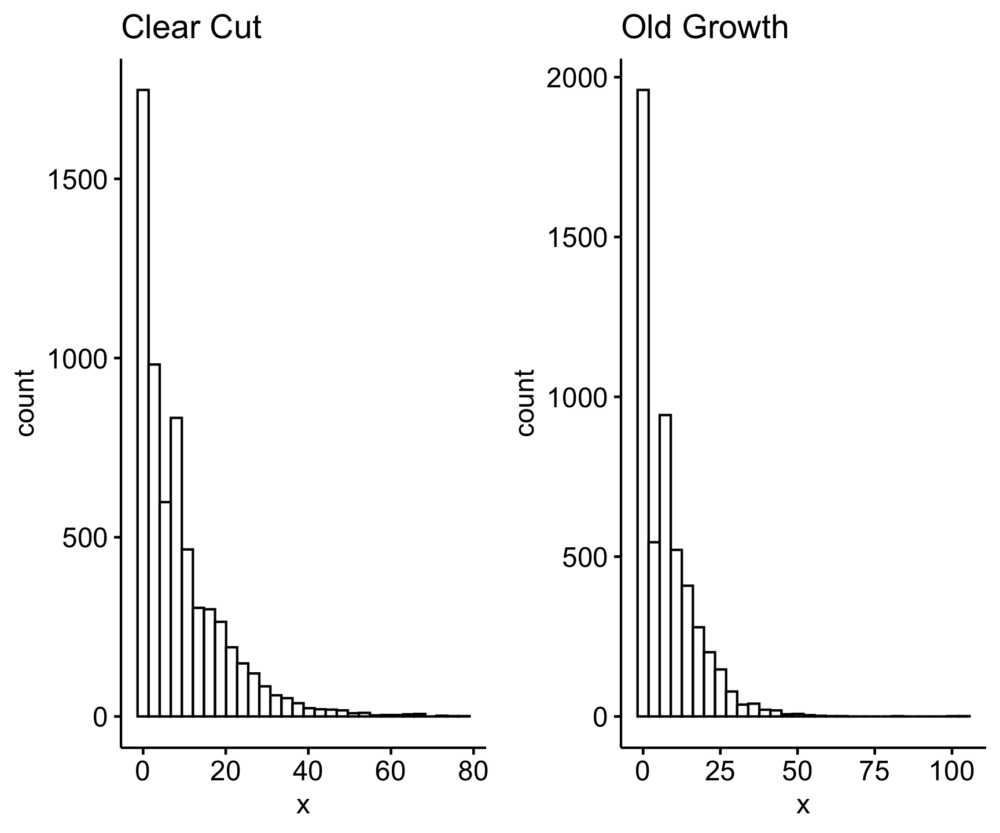
var.test(log(cc_weight), log(og_weight))
F test to compare two variances
data: log(cc_weight) and log(og_weight)
F = 1.0208, num df = 6310, denom df = 5225, p-value = 0.4374
alternative hypothesis: true ratio of variances is not equal to 1
95 percent confidence interval:
0.9691443 1.0750427
sample estimates:
ratio of variances
1.020787 t.test(log(trout_clean$weight_g) ~ trout_clean$section, var.equal = TRUE)
Two Sample t-test
data: log(trout_clean$weight_g) by trout_clean$section
t = 2.854, df = 11535, p-value = 0.004324
alternative hypothesis: true difference in means between group CC and group OG is not equal to 0
95 percent confidence interval:
0.02222425 0.11969560
sample estimates:
mean in group CC mean in group OG
1.457042 1.386082 t.test(trout_clean$weight_g ~ trout_clean$section, var.equal = FALSE)
Welch Two Sample t-test
data: trout_clean$weight_g by trout_clean$section
t = 4.5265, df = 11491, p-value = 6.056e-06
alternative hypothesis: true difference in means between group CC and group OG is not equal to 0
95 percent confidence interval:
0.4642016 1.1733126
sample estimates:
mean in group CC mean in group OG
8.988807 8.170050 sally_clean <- and_vertebrates |>
filter(species == "Coastal giant salamander") |>
drop_na(length_2_mm, weight_g)ggarrange(gghistogram(sally_clean$length_2_mm, title = "Length"),
gghistogram(sally_clean$weight_g, title = "Weight"))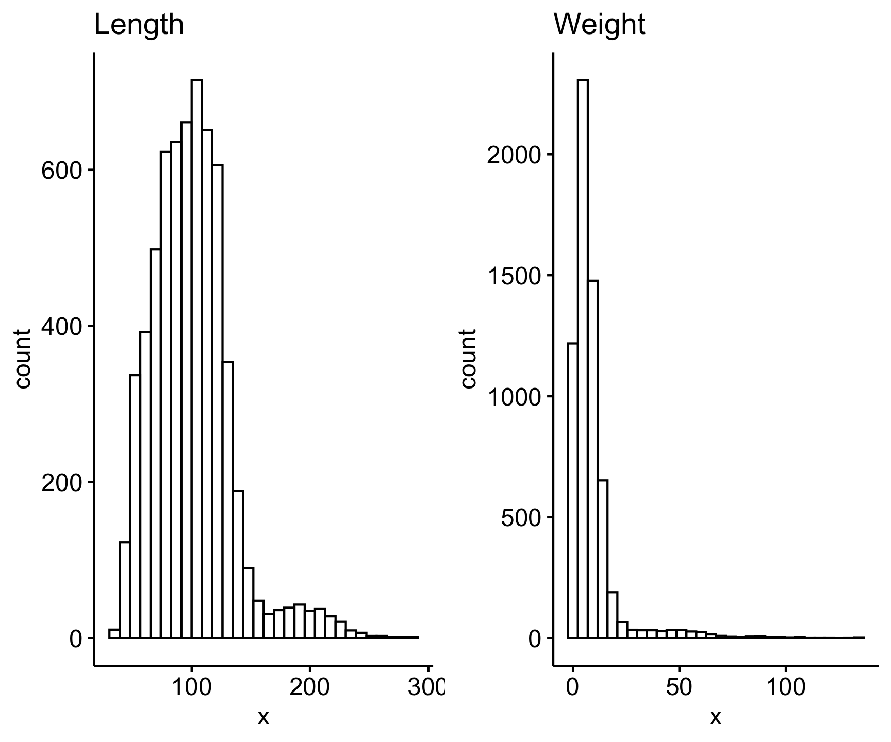
s <- sally_clean |>
slice_sample(n = 5000)
shapiro.test(s$length_2_mm)
Shapiro-Wilk normality test
data: s$length_2_mm
W = 0.93318, p-value < 2.2e-16shapiro.test(s$weight_g)
Shapiro-Wilk normality test
data: s$weight_g
W = 0.56069, p-value < 2.2e-16ggarrange(
gghistogram(log(sally_clean$length_2_mm), title = "Length"),
gghistogram(log(sally_clean$weight_g), title = "Weight")
)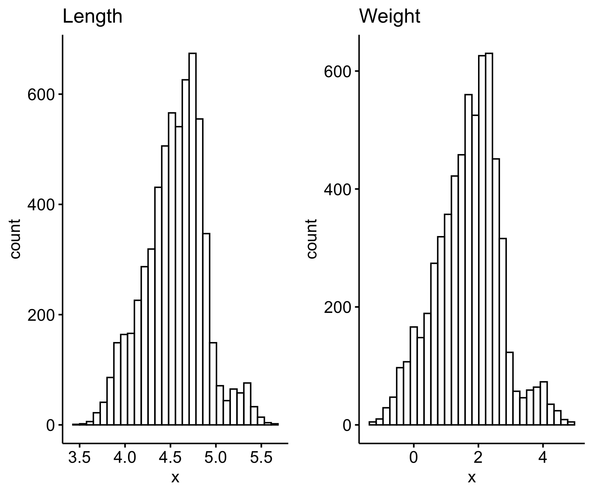
cor.test(log(sally_clean$length_2_mm), log(sally_clean$weight_g))
Pearson's product-moment correlation
data: log(sally_clean$length_2_mm) and log(sally_clean$weight_g)
t = 402.85, df = 6229, p-value < 2.2e-16
alternative hypothesis: true correlation is not equal to 0
95 percent confidence interval:
0.9804036 0.9822403
sample estimates:
cor
0.9813443 sally_clean |>
mutate(log_length = log(length_2_mm), log_weight = log(weight_g)) |>
ggscatter(x = 'log_length',
y = 'log_weight',
alpha = .35,
add = "loess")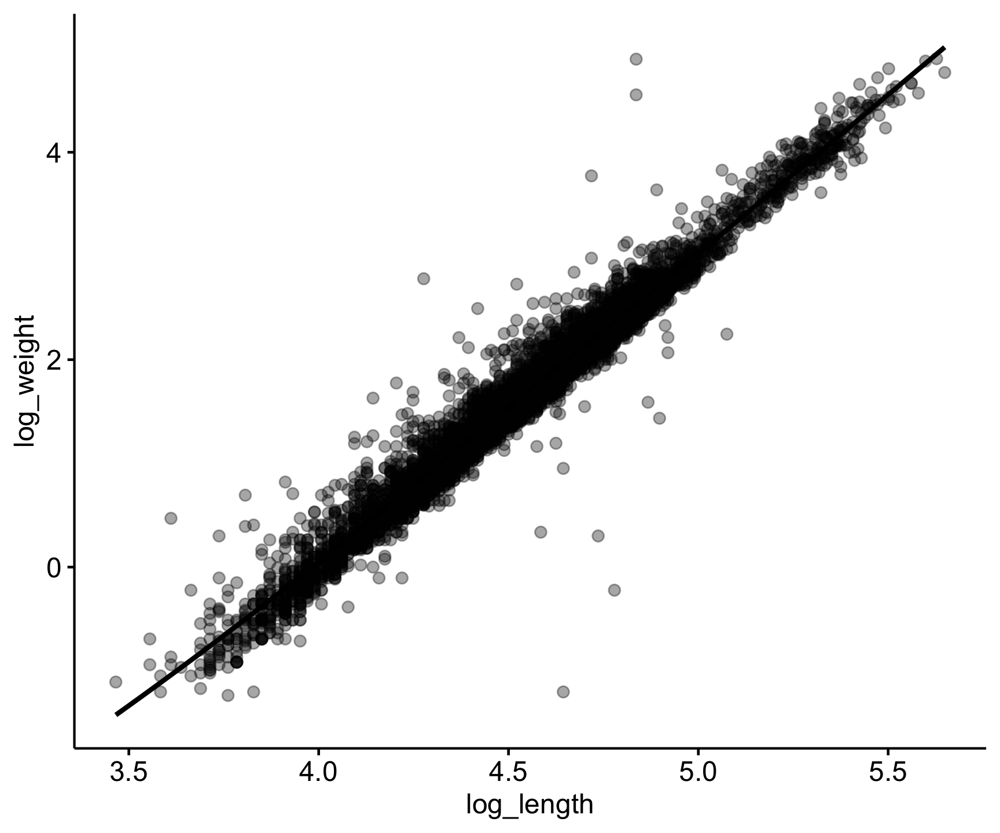
cor.test(sally_clean$length_2_mm, sally_clean$weight_g, method = "spearman")
Spearman's rank correlation rho
data: sally_clean$length_2_mm and sally_clean$weight_g
S = 819296957, p-value < 2.2e-16
alternative hypothesis: true rho is not equal to 0
sample estimates:
rho
0.9796802 ##Part 1
#1
sally_clean <- and_vertebrates |>
filter(species == "Coastal giant salamander") |>
drop_na(unittype, section)
cont_table_sally <- table(sally_clean$section, sally_clean$unittype)
print(cont_table_sally)
C IP P R S SC
CC 3757 0 711 0 2 936
OG 3940 50 1232 72 0 1058#1
chisq_test_sally <- chisq.test(cont_table_sally)
chisq_test_sally
Pearson's Chi-squared test
data: cont_table_sally
X-squared = 200.71, df = 5, p-value < 2.2e-16#The chi-square test produced a statistically significant result, with a chi-squared statistic of 200.71 and a p-value < 2.2e-16, well below the <0.05 threshold. This indicates a strong association between forest type and channel unit for Coastal Giant Salamander abundance. We reject the null hypothesis and say that there is a significant relationship between the forest type and channel unit for Coastal Giant Salamander abundance.#2
sally_clean <- and_vertebrates |>
filter(species == "Coastal giant salamander") |>
drop_na(weight_g)
cc_biomass <- sally_clean |> filter(section == "CC") |> pull(weight_g)
og_biomass <- sally_clean |> filter(section == "OG") |> pull(weight_g)
print(sally_clean)# A tibble: 6,338 × 16
year sitecode section reach pass unitnum unittype vert_index pitnumber
<dbl> <chr> <chr> <chr> <dbl> <dbl> <chr> <dbl> <dbl>
1 1993 MACKCC-L CC L 1 1 P 16 NA
2 1993 MACKCC-L CC L 1 2 C 36 NA
3 1993 MACKCC-L CC L 1 2 C 37 NA
4 1993 MACKCC-L CC L 1 2 C 38 NA
5 1993 MACKCC-L CC L 1 2 C 39 NA
6 1993 MACKCC-L CC L 1 2 C 40 NA
7 1993 MACKCC-L CC L 1 2 C 41 NA
8 1993 MACKCC-L CC L 1 2 C 42 NA
9 1993 MACKCC-L CC L 1 2 C 43 NA
10 1993 MACKCC-L CC L 1 2 C 44 NA
# ℹ 6,328 more rows
# ℹ 7 more variables: species <chr>, length_1_mm <dbl>, length_2_mm <dbl>,
# weight_g <dbl>, clip <chr>, sampledate <date>, notes <chr>#2
shapiro.test(cc_biomass)
Shapiro-Wilk normality test
data: cc_biomass
W = 0.64219, p-value < 2.2e-16shapiro.test(og_biomass)
Shapiro-Wilk normality test
data: og_biomass
W = 0.49182, p-value < 2.2e-16var.test(cc_biomass, og_biomass)
F test to compare two variances
data: cc_biomass and og_biomass
F = 0.82901, num df = 3027, denom df = 3309, p-value = 1.439e-07
alternative hypothesis: true ratio of variances is not equal to 1
95 percent confidence interval:
0.7732148 0.8889213
sample estimates:
ratio of variances
0.8290065 t_test_biomass <- t.test(cc_biomass, og_biomass, var.equal = TRUE)
t_test_biomass
Two Sample t-test
data: cc_biomass and og_biomass
t = 4.905, df = 6336, p-value = 9.575e-07
alternative hypothesis: true difference in means is not equal to 0
95 percent confidence interval:
0.8953886 2.0875473
sample estimates:
mean of x mean of y
9.810634 8.319166 #2
#The biomass of Coastal Giant Salamanders was significantly higher in the "CC" section compared to the "OG" section (t = 4.905, p-value = 9.575e-07). Both sections showed non-normal distributions (Shapiro-Wilk p-value < 2.2e-16), and an F-test revealed unequal variances (p-value = 1.439e-07). It can be assumed the "CC" section has a higher biomass.#3
?and_vertebrates
cutthroat_trout <- and_vertebrates |>
filter(species == "Cutthroat trout") |>
drop_na(length_1_mm, weight_g)
cor_test <- cor.test(cutthroat_trout$length_1_mm, cutthroat_trout$weight_g)
print(cor_test)
Pearson's product-moment correlation
data: cutthroat_trout$length_1_mm and cutthroat_trout$weight_g
t = 249.5, df = 12590, p-value < 2.2e-16
alternative hypothesis: true correlation is not equal to 0
95 percent confidence interval:
0.9090311 0.9149092
sample estimates:
cor
0.912017 #3
#The Pearson's product-moment correlation test between body length/snout to fork length and body mass for Cutthroat trout revealed a strong positive correlation (p-value < 2.2e-16). This indicates a statistically significant relationship between body length and body mass in Cutthroat trout.##Part 2
#install the car package
install.packages("car")
The downloaded binary packages are in
/var/folders/9z/jhvcp6pd2jdgn7z7pd30zw1w0000gn/T//Rtmp0P9AGw/downloaded_packages??car# data set
data("pie_crab")
pie_crab# A tibble: 392 × 9
date latitude site size air_temp air_temp_sd water_temp water_temp_sd
<date> <dbl> <chr> <dbl> <dbl> <dbl> <dbl> <dbl>
1 2016-07-24 30 GTM 12.4 21.8 6.39 24.5 6.12
2 2016-07-24 30 GTM 14.2 21.8 6.39 24.5 6.12
3 2016-07-24 30 GTM 14.5 21.8 6.39 24.5 6.12
4 2016-07-24 30 GTM 12.9 21.8 6.39 24.5 6.12
5 2016-07-24 30 GTM 12.4 21.8 6.39 24.5 6.12
6 2016-07-24 30 GTM 13.0 21.8 6.39 24.5 6.12
7 2016-07-24 30 GTM 10.3 21.8 6.39 24.5 6.12
8 2016-07-24 30 GTM 11.2 21.8 6.39 24.5 6.12
9 2016-07-24 30 GTM 12.7 21.8 6.39 24.5 6.12
10 2016-07-24 30 GTM 14.6 21.8 6.39 24.5 6.12
# ℹ 382 more rows
# ℹ 1 more variable: name <chr>library(visdat)
vis_dat(pie_crab)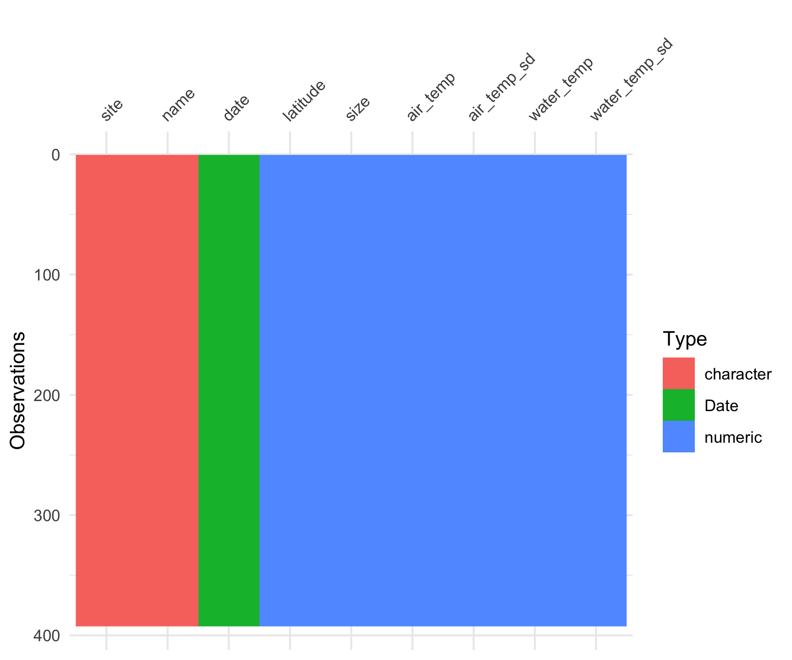
?pie_crablibrary(dplyr)
# sample size per site
count(pie_crab, site)# A tibble: 13 × 2
site n
<chr> <int>
1 BC 37
2 CC 27
3 CT 33
4 DB 30
5 GTM 28
6 JC 30
7 NB 29
8 NIB 30
9 PIE 28
10 RC 25
11 SI 30
12 VCR 30
13 ZI 35summary(pie_crab) date latitude site size
Min. :2016-07-24 Min. :30.00 Length:392 Min. : 6.64
1st Qu.:2016-07-28 1st Qu.:34.00 Class :character 1st Qu.:12.02
Median :2016-08-01 Median :39.10 Mode :character Median :14.44
Mean :2016-08-02 Mean :37.69 Mean :14.66
3rd Qu.:2016-08-09 3rd Qu.:41.60 3rd Qu.:17.34
Max. :2016-08-13 Max. :42.70 Max. :23.43
air_temp air_temp_sd water_temp water_temp_sd
Min. :10.29 Min. :6.391 Min. :13.98 Min. :4.838
1st Qu.:12.05 1st Qu.:8.110 1st Qu.:14.33 1st Qu.:6.567
Median :13.93 Median :8.410 Median :17.50 Median :6.998
Mean :15.20 Mean :8.654 Mean :17.65 Mean :7.252
3rd Qu.:18.63 3rd Qu.:9.483 3rd Qu.:20.54 3rd Qu.:7.865
Max. :21.79 Max. :9.965 Max. :24.50 Max. :9.121
name
Length:392
Class :character
Mode :character
#ANOVA
library(ggplot2)
library(ggpubr)
pie_crab |>
ggboxplot(x = 'site', y = 'size', col = 'site') +
geom_jitter(size =.25) +
theme(legend.postition = "none")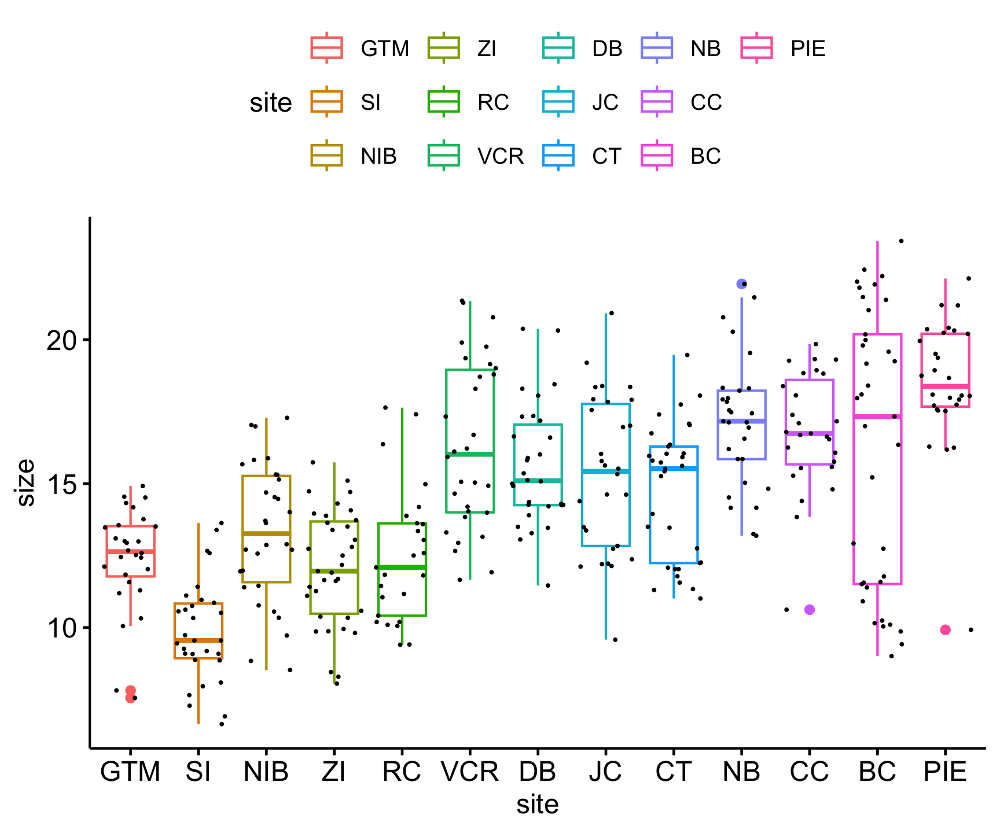
library(tidyr)
library(purrr)
norms <- pie_crab |>
nest(data = -site) |>
mutate(Shapiro = map(data, ~ shapiro.test(.x$size)),
n = map_dbl(data, nrow),
glance_shapiro = map(Shapiro, broom::glance)) |>
unnest(glance_shapiro)
flextable::flextable(dplyr::select(norms, site, n, statistic, p.value)) |>
flextable::set_caption("Shapiro-Wilk normality test for size at each site")site | n | statistic | p.value |
|---|---|---|---|
GTM | 28 | 0.9007814 | 0.0119337484 |
SI | 30 | 0.9705352 | 0.5539208550 |
NIB | 30 | 0.9728297 | 0.6191340731 |
ZI | 35 | 0.9744583 | 0.5765589900 |
RC | 25 | 0.9315062 | 0.0941588802 |
VCR | 30 | 0.9444682 | 0.1200262239 |
DB | 30 | 0.9576271 | 0.2690631942 |
JC | 30 | 0.9634754 | 0.3788327942 |
CT | 33 | 0.9277365 | 0.0301785639 |
NB | 29 | 0.9675367 | 0.4949587443 |
CC | 27 | 0.9354659 | 0.0941803007 |
BC | 37 | 0.8885721 | 0.0014402753 |
PIE | 28 | 0.8489399 | 0.0008899392 |
(res_aov <- aov(size ~ site, data = pie_crab))Call:
aov(formula = size ~ site, data = pie_crab)
Terms:
site Residuals
Sum of Squares 2172.376 2626.421
Deg. of Freedom 12 379
Residual standard error: 2.632465
Estimated effects may be unbalancedgghistogram(res_aov$residuals)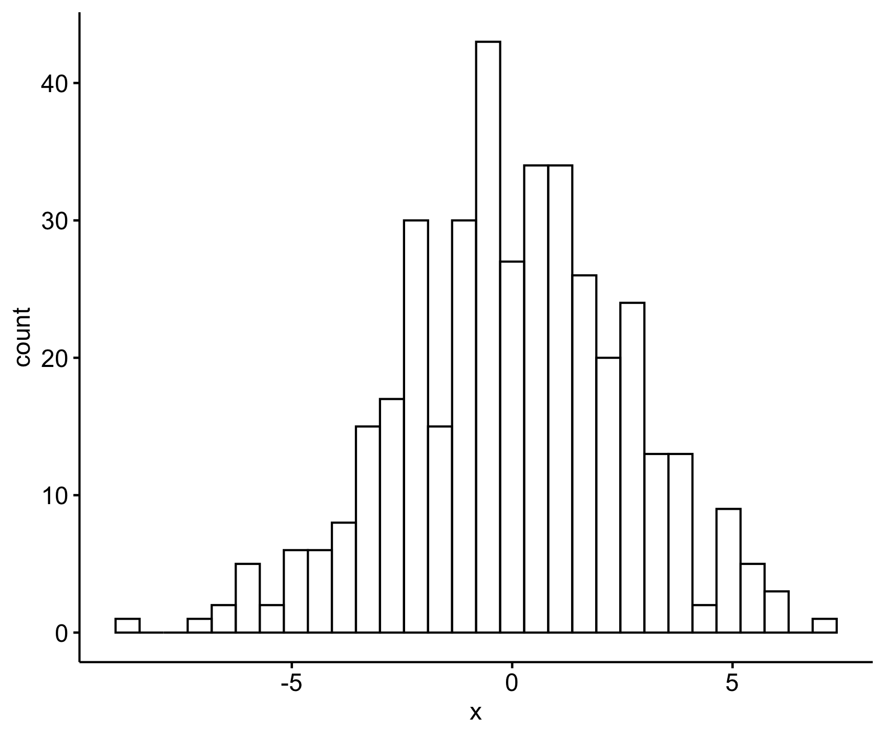
shapiro.test(res_aov$residuals)
Shapiro-Wilk normality test
data: res_aov$residuals
W = 0.99708, p-value = 0.7122library(car)
leveneTest(size ~ site, data = pie_crab)Levene's Test for Homogeneity of Variance (center = median)
Df F value Pr(>F)
group 12 9.2268 1.151e-15 ***
379
---
Signif. codes: 0 '***' 0.001 '**' 0.01 '*' 0.05 '.' 0.1 ' ' 1#perform Welch's ANOVA
oneway.test(size ~ site, data = pie_crab, var.equal = FALSE)
One-way analysis of means (not assuming equal variances)
data: size and site
F = 39.108, num df = 12.00, denom df = 145.79, p-value < 2.2e-16data("pie_crab")
pie_crab# A tibble: 392 × 9
date latitude site size air_temp air_temp_sd water_temp water_temp_sd
<date> <dbl> <chr> <dbl> <dbl> <dbl> <dbl> <dbl>
1 2016-07-24 30 GTM 12.4 21.8 6.39 24.5 6.12
2 2016-07-24 30 GTM 14.2 21.8 6.39 24.5 6.12
3 2016-07-24 30 GTM 14.5 21.8 6.39 24.5 6.12
4 2016-07-24 30 GTM 12.9 21.8 6.39 24.5 6.12
5 2016-07-24 30 GTM 12.4 21.8 6.39 24.5 6.12
6 2016-07-24 30 GTM 13.0 21.8 6.39 24.5 6.12
7 2016-07-24 30 GTM 10.3 21.8 6.39 24.5 6.12
8 2016-07-24 30 GTM 11.2 21.8 6.39 24.5 6.12
9 2016-07-24 30 GTM 12.7 21.8 6.39 24.5 6.12
10 2016-07-24 30 GTM 14.6 21.8 6.39 24.5 6.12
# ℹ 382 more rows
# ℹ 1 more variable: name <chr>library(visdat)
vis_dat(pie_crab)
?pie_crablibrary(dplyr)
# sample size per site
count(pie_crab, site)# A tibble: 13 × 2
site n
<chr> <int>
1 BC 37
2 CC 27
3 CT 33
4 DB 30
5 GTM 28
6 JC 30
7 NB 29
8 NIB 30
9 PIE 28
10 RC 25
11 SI 30
12 VCR 30
13 ZI 35summary(pie_crab) date latitude site size
Min. :2016-07-24 Min. :30.00 Length:392 Min. : 6.64
1st Qu.:2016-07-28 1st Qu.:34.00 Class :character 1st Qu.:12.02
Median :2016-08-01 Median :39.10 Mode :character Median :14.44
Mean :2016-08-02 Mean :37.69 Mean :14.66
3rd Qu.:2016-08-09 3rd Qu.:41.60 3rd Qu.:17.34
Max. :2016-08-13 Max. :42.70 Max. :23.43
air_temp air_temp_sd water_temp water_temp_sd
Min. :10.29 Min. :6.391 Min. :13.98 Min. :4.838
1st Qu.:12.05 1st Qu.:8.110 1st Qu.:14.33 1st Qu.:6.567
Median :13.93 Median :8.410 Median :17.50 Median :6.998
Mean :15.20 Mean :8.654 Mean :17.65 Mean :7.252
3rd Qu.:18.63 3rd Qu.:9.483 3rd Qu.:20.54 3rd Qu.:7.865
Max. :21.79 Max. :9.965 Max. :24.50 Max. :9.121
name
Length:392
Class :character
Mode :character
pie_crab# A tibble: 392 × 9
date latitude site size air_temp air_temp_sd water_temp water_temp_sd
<date> <dbl> <chr> <dbl> <dbl> <dbl> <dbl> <dbl>
1 2016-07-24 30 GTM 12.4 21.8 6.39 24.5 6.12
2 2016-07-24 30 GTM 14.2 21.8 6.39 24.5 6.12
3 2016-07-24 30 GTM 14.5 21.8 6.39 24.5 6.12
4 2016-07-24 30 GTM 12.9 21.8 6.39 24.5 6.12
5 2016-07-24 30 GTM 12.4 21.8 6.39 24.5 6.12
6 2016-07-24 30 GTM 13.0 21.8 6.39 24.5 6.12
7 2016-07-24 30 GTM 10.3 21.8 6.39 24.5 6.12
8 2016-07-24 30 GTM 11.2 21.8 6.39 24.5 6.12
9 2016-07-24 30 GTM 12.7 21.8 6.39 24.5 6.12
10 2016-07-24 30 GTM 14.6 21.8 6.39 24.5 6.12
# ℹ 382 more rows
# ℹ 1 more variable: name <chr>pie_sites <- pie_crab |>
filter(site %in% c("GTM", "DB", "PIE"))
leveneTest(size ~ site, data = pie_sites)Levene's Test for Homogeneity of Variance (center = median)
Df F value Pr(>F)
group 2 0.548 0.5802
83 # Note that the variances are equal (p = 0.5802), so we can proceed with the ANOVA
# ANOVA for the data subset
pie_anova <- aov(size ~ site, data = pie_sites)
# View the ANOVA results
summary(pie_anova) Df Sum Sq Mean Sq F value Pr(>F)
site 2 521.5 260.75 60.02 <2e-16 ***
Residuals 83 360.6 4.34
---
Signif. codes: 0 '***' 0.001 '**' 0.01 '*' 0.05 '.' 0.1 ' ' 1TukeyHSD(pie_anova) Tukey multiple comparisons of means
95% family-wise confidence level
Fit: aov(formula = size ~ site, data = pie_sites)
$site
diff lwr upr p adj
GTM-DB -3.200786 -4.507850 -1.893722 3.0e-07
PIE-DB 2.899929 1.592865 4.206992 2.9e-06
PIE-GTM 6.100714 4.771306 7.430123 0.0e+00pie_lm <- lm(size ~ latitude, data = pie_crab)
#view the results of the linear model
summary(pie_lm)
Call:
lm(formula = size ~ latitude, data = pie_crab)
Residuals:
Min 1Q Median 3Q Max
-7.8376 -1.8797 0.1144 1.9484 6.9280
Coefficients:
Estimate Std. Error t value Pr(>|t|)
(Intercept) -3.62442 1.27405 -2.845 0.00468 **
latitude 0.48512 0.03359 14.441 < 2e-16 ***
---
Signif. codes: 0 '***' 0.001 '**' 0.01 '*' 0.05 '.' 0.1 ' ' 1
Residual standard error: 2.832 on 390 degrees of freedom
Multiple R-squared: 0.3484, Adjusted R-squared: 0.3467
F-statistic: 208.5 on 1 and 390 DF, p-value: < 2.2e-16pie_crab |>
ggscatter(x = 'latitude', y = 'size',
alpha = .35,
add = "reg.line")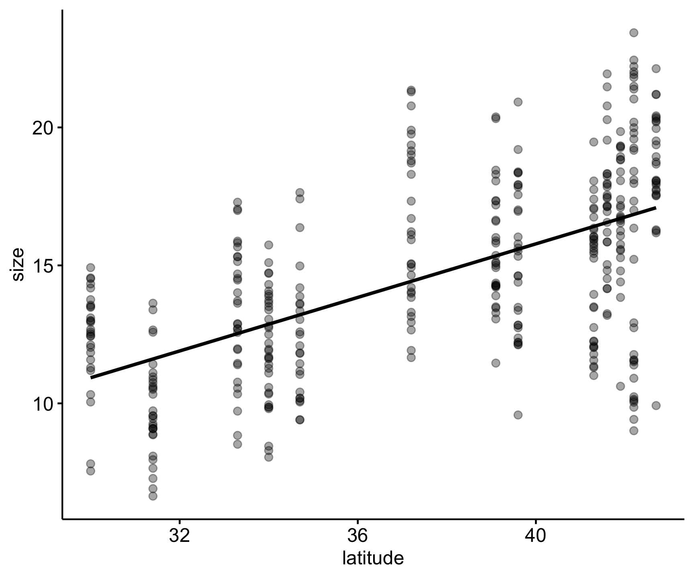
new_lat <- data.frame(latitude = c(32, 36, 38))
broom::augment(pie_lm, newdata = new_lat)# A tibble: 3 × 2
latitude .fitted
<dbl> <dbl>
1 32 11.9
2 36 13.8
3 38 14.8pie_mlm <- lm(size ~ latitude + air_temp + water_temp, data = pie_crab)
summary(pie_mlm)
Call:
lm(formula = size ~ latitude + air_temp + water_temp, data = pie_crab)
Residuals:
Min 1Q Median 3Q Max
-8.7099 -1.7195 -0.0602 1.7823 7.7271
Coefficients:
Estimate Std. Error t value Pr(>|t|)
(Intercept) 77.7460 17.3477 4.482 9.76e-06 ***
latitude -1.0587 0.3174 -3.336 0.000933 ***
air_temp -2.4041 0.3844 -6.255 1.05e-09 ***
water_temp 0.7563 0.1465 5.162 3.92e-07 ***
---
Signif. codes: 0 '***' 0.001 '**' 0.01 '*' 0.05 '.' 0.1 ' ' 1
Residual standard error: 2.677 on 388 degrees of freedom
Multiple R-squared: 0.4206, Adjusted R-squared: 0.4161
F-statistic: 93.9 on 3 and 388 DF, p-value: < 2.2e-16pie_crab |>
dplyr::select(latitude, air_temp, water_temp) |>
cor() latitude air_temp water_temp
latitude 1.0000000 -0.9949715 -0.9571738
air_temp -0.9949715 1.0000000 0.9632287
water_temp -0.9571738 0.9632287 1.0000000##Exercises Pt 2
#1
pie_sites_ordered <- pie_crab |>
mutate(site = factor(site, levels = unique(pie_crab |>
arrange(latitude) |>
pull(site))))
ggplot(pie_sites_ordered, aes(x = site, y = size, fill = site)) +
geom_boxplot() +
geom_jitter(width = 0.1, size = 1, alpha = 0.7) +
labs(title = "Carapace Width (Size) by Site", x = "Site", y = "Carapace Width (Size)") +
theme_minimal() +
theme(legend.position = "none")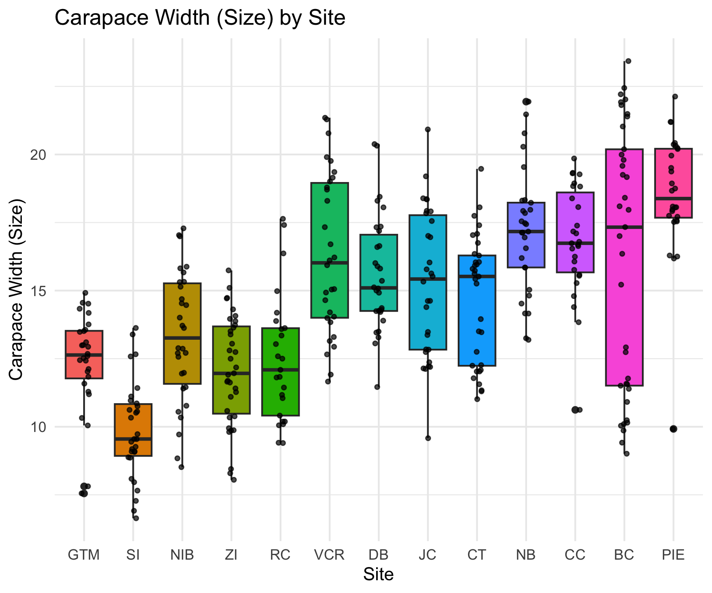
#1
#The ANOVA test showed that there is a significant difference in crab size between the three sites (GTM, DB, and PIE). Crabs from the GTM site were significantly larger than those from the PIE site. However, no significant size differences were found between DB and PIE, or between GTM and DB. This suggests that the size of crabs varies by site, with GTM crabs being the largest.#2
water_temp_lm <- lm(size ~ water_temp_sd, data = pie_crab)
summary(water_temp_lm)
Call:
lm(formula = size ~ water_temp_sd, data = pie_crab)
Residuals:
Min 1Q Median 3Q Max
-7.9428 -2.6948 -0.2145 2.6573 8.8070
Coefficients:
Estimate Std. Error t value Pr(>|t|)
(Intercept) 13.93728 1.15338 12.084 <2e-16 ***
water_temp_sd 0.09938 0.15716 0.632 0.528
---
Signif. codes: 0 '***' 0.001 '**' 0.01 '*' 0.05 '.' 0.1 ' ' 1
Residual standard error: 3.506 on 390 degrees of freedom
Multiple R-squared: 0.001024, Adjusted R-squared: -0.001537
F-statistic: 0.3999 on 1 and 390 DF, p-value: 0.5275#2
ggplot(pie_crab, aes(x = water_temp_sd, y = size)) +
geom_point(alpha = 0.6) + # Scatter plot
geom_smooth(method = "lm", color = "blue", se = FALSE) +
labs(title = "Effect of Annual Water Temperature Variation on Carapace Width",
x = "Annual Water Temperature Variation (Water Temp SD)",
y = "Carapace Width (Size)") +
theme_minimal()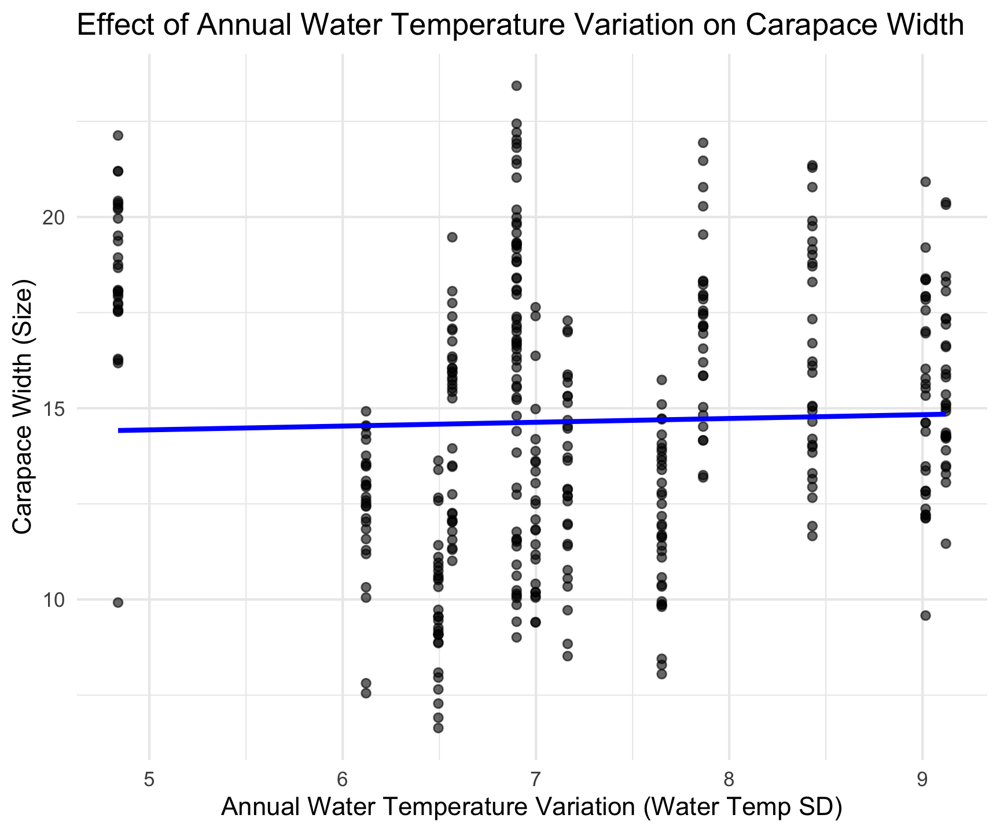
#2
#The analysis showed that annual water_temp_sd has a small but significant effect on size. As water temperature variation increases, carapace width tends to decrease, but the relationship is weak.#3
correlation_matrix <- pie_crab |>
dplyr::select(latitude, air_temp_sd, water_temp_sd) |>
cor()
correlation_matrix latitude air_temp_sd water_temp_sd
latitude 1.00000000 0.7932130 0.04188273
air_temp_sd 0.79321301 1.0000000 0.40970338
water_temp_sd 0.04188273 0.4097034 1.00000000#From the correlation matrix, we can see that the predictors are weakly correlated with each other. There is a small negative correlation between latitude and water temperature variation (-0.22), and a small positive correlation between air and water temperature variations (0.31).#3
multiple_lm <- lm(size ~ latitude + air_temp_sd + water_temp_sd, data = pie_crab)
summary(multiple_lm)
Call:
lm(formula = size ~ latitude + air_temp_sd + water_temp_sd, data = pie_crab)
Residuals:
Min 1Q Median 3Q Max
-7.7515 -1.8897 0.0506 1.9301 6.6746
Coefficients:
Estimate Std. Error t value Pr(>|t|)
(Intercept) -3.96880 1.54818 -2.564 0.0107 *
latitude 0.55940 0.06413 8.723 <2e-16 ***
air_temp_sd -0.41713 0.30559 -1.365 0.1730
water_temp_sd 0.15927 0.16174 0.985 0.3254
---
Signif. codes: 0 '***' 0.001 '**' 0.01 '*' 0.05 '.' 0.1 ' ' 1
Residual standard error: 2.832 on 388 degrees of freedom
Multiple R-squared: 0.3516, Adjusted R-squared: 0.3466
F-statistic: 70.13 on 3 and 388 DF, p-value: < 2.2e-16#3
#The regression analysis found that latitude significantly affects carapace width, with larger crabs at higher latitudes (p < 0.001). However, air and water temperature variations did not significantly impact carapace width. The model explained about 35% of the variation in crab size.